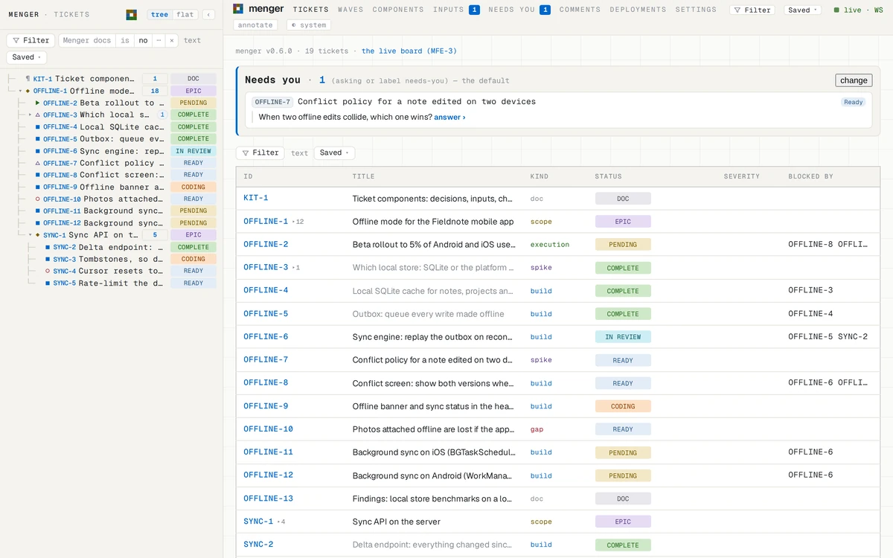
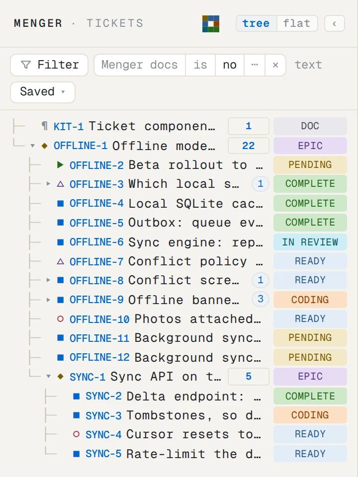
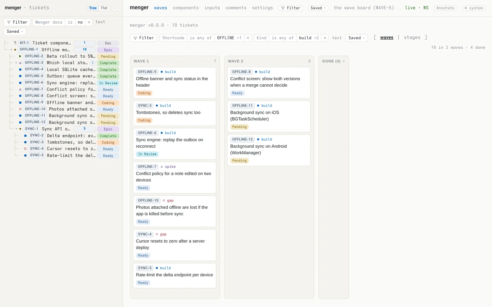

The plan lives in one place, the work in another.
The plan is a document or a board from last month. What is really being built lives in branches, chat and someone's head.
For software teams of people and AI agents
menger keeps your plan as a tree of tickets. You decide what is ready; people and agents pick it up; every change reaches every open screen the moment it happens.
Watch the 60-second tour ↓ · Open source, MIT licence

The plan is a document or a board from last month. What is really being built lives in branches, chat and someone's head.
A ticket says “in progress” for three weeks. Is it blocked, finished, or forgotten? You find out by asking.
An agent starts work a teammate already claimed. A teammate waits on a question an agent asked in a log nobody read.

Start with a scope: the goal. Break it into builds, spikes, fixes and rollouts, and say what waits on what.

You move a ticket to Ready. Whoever starts it — a teammate or an agent — marks it Coding, so nothing is picked up twice. The wave board shows what can start now.

Each commit links to the ticket it finishes. Review and merge move it to Complete, and every board and page shows it at once.
Five short clips, recorded from the real app.
ready into the board's filter: it narrows to the four tickets that can start now.menger has opinions about how a plan should behave. Each one is something you can see in the app.
Scopes break into work, and work breaks down until each piece fits one person or one agent. What a piece produces — a spike's answer, a benchmark, a report — is filed beneath it, so every result shows where it came from.
Learn more about tickets and kinds →Each status means one thing and has one owner: people promote Pending to Ready, a worker sets Coding the moment they start and In Review when the work is committed, and whoever merges marks it Complete. So when the board says Coding, someone really is.
Learn more about the lifecycle →Every screen holds one open connection, and the server pushes each change down it as it happens: nothing polls, nothing waits for a refresh. Everyone looking at the plan sees the same plan.
Learn more about the board →Everything menger does is a method on one Plexus RPC connection, and the app has no private side door. The web app, the synapse command line and your agents make the same calls, so anything you can click, a script can do.
# what can start now?
synapse -P 4455 menger tickets ready_set --summary true
summary:
id: OFFLINE-7
kind: spike
status: Ready
title: Conflict policy for a note edited on two devices
…
# claim one, do the work, hand it over
synapse -P 4455 menger tickets set_status --id OFFLINE-10 --status Coding
synapse -P 4455 menger tickets link_commits --id OFFLINE-10 --commits a7c31f0
synapse -P 4455 menger tickets set_status --id OFFLINE-10 --status 'In Review'When a ticket needs a call, it asks the owner right there: one choice, several, or a written reply, with each option's cost and a recommendation. The answer is kept with its history, next to the work that depends on it.
Learn more about inputs →Use the hosted app, the desktop app — on its own or connected to a server — or one binary on your own machine with a SQLite file. menger is open source under the MIT licence, so you can always run it yourself.
Learn more about running your own →cargo install menger --features embedded-app
menger --db-path ~/menger/tickets.db
# the app http://127.0.0.1:4456/
# WebSocket ws://127.0.0.1:4455 (synapse -P 4455 …)
# REST + SSE http://127.0.0.1:4457Sign in on menger's own page: an email code, Google, GitHub or Apple, or your company's single sign-on. Add an authenticator app if you like.
Log inLinux, macOS and Windows. Keep your tickets on this computer, or connect to a menger server. It updates itself, and asks first.
Download mengerEvery build is on the latest release page.
One command with Rust installed, then open http://127.0.0.1:4456/.
cargo install menger --features embedded-appchmod +x menger_*_amd64.AppImage, then run itmenger_*_aarch64.dmgmenger_*_x64.dmgFirst open: macOS says the developer cannot be verified. Control-click the app, choose Open, then Open again (or System Settings → Privacy & Security → Open Anyway).
macOS buildsmenger_*_x64-setup.exemenger_*_x64_en-US.msi, for managed installsFirst run: SmartScreen says it protected your PC. Choose More info, then Run anyway.
Windows buildsThe builds are signed for the self-updater, not yet by Apple or Microsoft — hence the warning on first open. Mobile apps are coming.
Start with one goal and the work under it. Promote what is ready, and watch it land.